Apêndice A: Configuração
Coletânea de informações sobre configuração de PLC, necessário para otimizar os recusrsos do PLC afim de atender as necessidades do projeto.
A.1 OBs de Interrupção
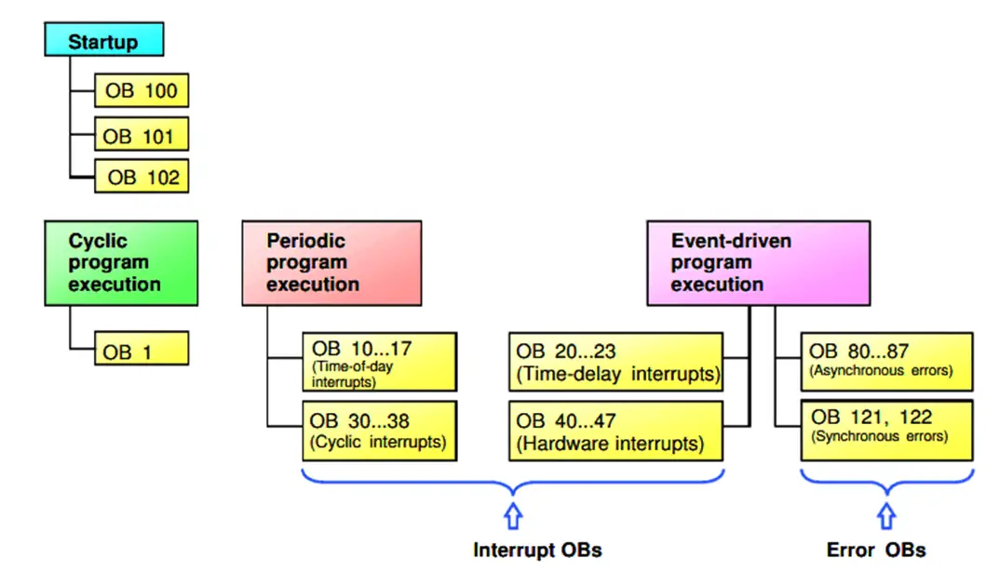
Esta palavra não é exclusividade da Siemens, interrupções cíclicas são algumas rotinas específicas e críticas que o programador deseja que sejam executadas em um determinado horário e evento, por (Ghareb 2021).
As interrupções não esperam que o programa principal termine seu ciclo. Uma vez que as interrupções ocorrem, ele para o OB principal ( OB1 ) no ponto de interrupção e executa sua rotina, então o OB principal retoma o programa do ponto de interrupção novamente.
Dominar o uso do recurso de interrupção é importante para solucionar problemas práticos que somente o uso das mesmas resulta em solução confiável e eficiente.
A.1.1 Tipos de Interrupção OB
Existem quatro tipos de interrupção OB usados, listados abaixo:
Interrupção Cíclica: OB30, OB38
Interrupção de Erro de Hardware: OB40
Interrupção da Hora do Dia: OB20
Interrupção de Inicialização: OB100
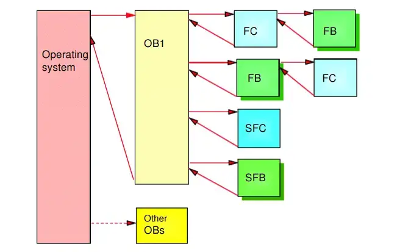
A.1.2 Interrupção Cíclica (OB30, OB38)
A interrupção cíclica é usada quando há um requisito de execução cíclica.A ideia por trás dessa interrupção é que você pode configurar uma delas para ser executada com determinados tempos cíclicos que independem do tempo do ciclo de varredura do seu programa principal.
As interrupções cíclicas no portal TIA geralmente têm a prioridade de (30: 38) que depende da CPU que você possui. Nem todas têm a mesma interrupção cíclica, algumas CPUs têm apenas (32: 35) outras CPUs podem ter outro grupo de interrupções do ciclo.
O programa principal OB1 para sua execução toda vez que uma interrupção cíclica é executada, e o programa volta ao ponto da chamada da interrupção no bloco principal ao final da execução da interrupção cíclica.
Aplicações de interrupções cíclicas
Controladores PID: O tempo do ciclo de varredura principal pode afetar a precisão de suas ações PID, então você não deseja relacionar suas ações com o tempo do ciclo de varredura, então você empurra suas instruções PID para uma interrupção cíclica para ser executado periodicamente com determinados tempos cíclicos.
Segurança: Segurança está em primeiro lugar , portanto durante o seu processo você pode precisar de algumas ações de segurança que devem ser verificadas periodicamente em determinados horários.
O tempo de interrupção padrão no PLC S7 é de 100 milissegundos. Mas você pode alterá-lo na visualização de Hardware.
Para adicionar interrupção cíclica ao OB, abra o portal TIA e siga os passos abaixo.
Passo 1:
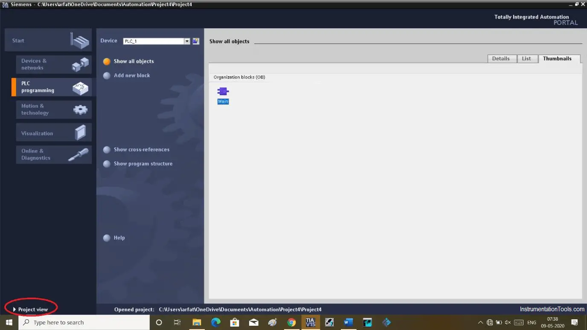
Passo 2:
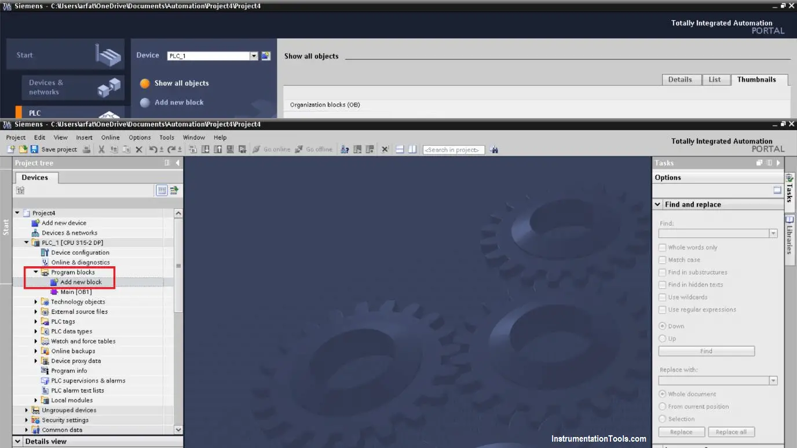
Passo 3:
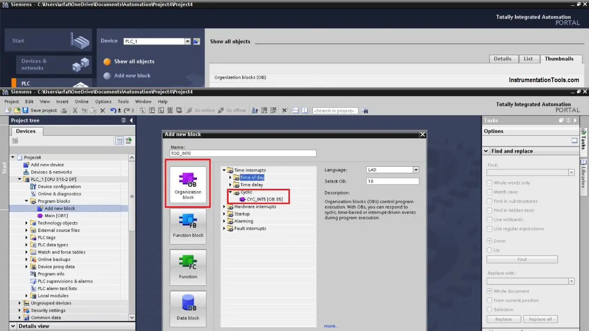
A.1.3 Interrupção de Hardware (OB40)
Este tipo de interrupção OB é executada quando a CPU detecta algum erro no módulo de entrada, ou devido a circuitos residentes no módulo de entrada. É preciso que o módulo de entrada contenha o recurso de interrupção de hardware e o mesmo, OB40, seja configurado.
A.1.4 Interrupção por Tempo (OB20)
Este tipo de interrupção será executado com base em um determinado horário do dia para realizar uma tarefa.
É necessário configurar o OB20 para usar a interrupção por tempo. Neste bloco você pode especificar um tempo e escrever a lógica de execução da interrupção por atraso de tempo.
A.1.5 Interrupção de Inicializção (OB100)
Exemplos de chamada da interrupão de inicialização são, falha de energia, se o PLC entrar no modo de parada quando a energia estiver disponível, a transição da CPU de parada para operação será executada. O OB100 de inicialização será executado, o que redefinirá a entrada para não iniciar o equipamento automaticamente.
Este tipo de interrupção é utilizado para realizar uma inicialização da CPU de forma mais suave.
A.1.6 Prioridade das Interrupções
Uma observação muito importante que você deve estar ciente disso é a prioridade da interrupção que você está usando.
Cada interrupção no portal TIA possui um número denominado prioridade que se refere à disposição daquela interrupção entre todas as interrupções, supondo que duas interrupções ocorram ao mesmo tempo.
O PLC executará primeiro a maior prioridade e depois a Segunda interrupção (que tem menor prioridade) e depois voltará novamente para o OB Principal.
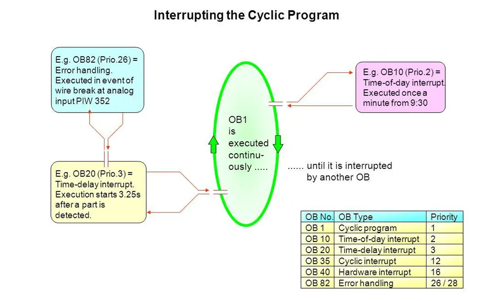
A.1.7 Interrupções cíclicas no Portal TIA
Uma observação muito importante que você deve estar ciente disso é a prioridade da interrupção que você está usando.
- Selecione a CPU desejada:
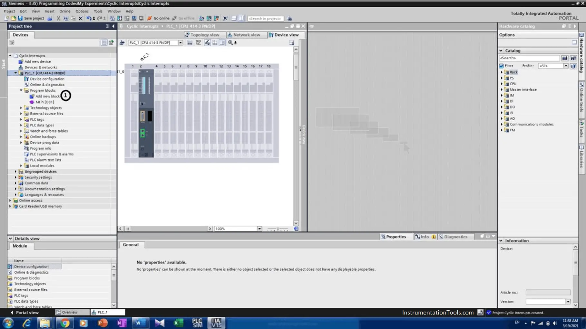
- Selecione adicionar novo bloco organizacional:
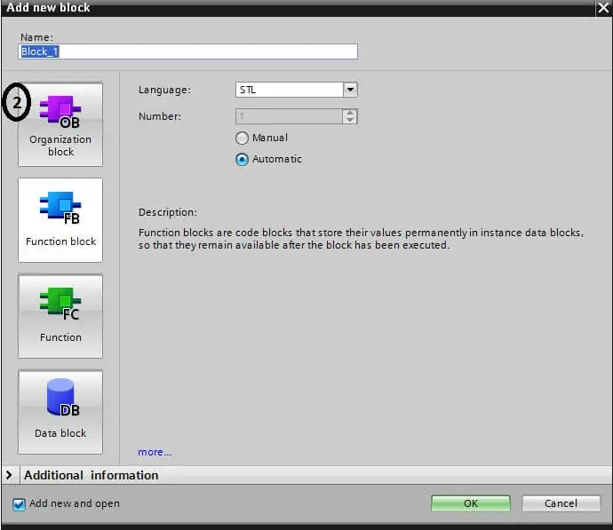
- Selecione qualquer interrupção e pressione OK:
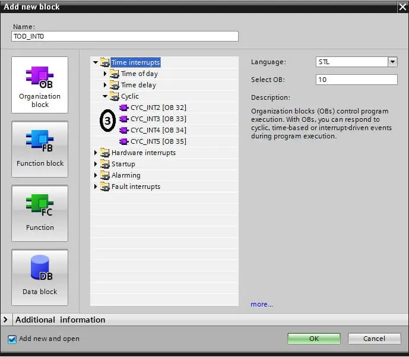
- Depois de selecionar o desejado, ele será mostrado nos blocos do programa:
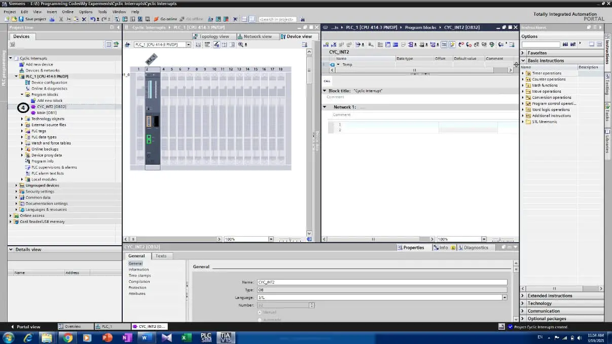
- Selecionar as propriedades da CPU para configurar o tempo de execução:
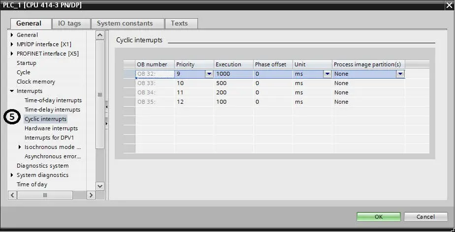
- Escrever o programa conforme mostrado na próxima figura.:
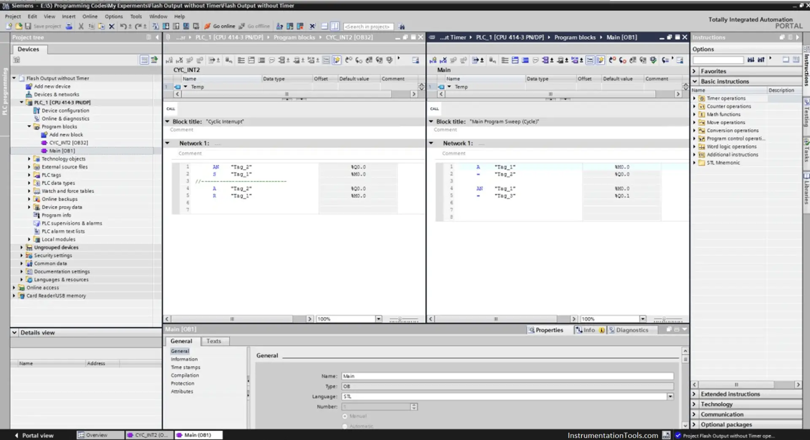